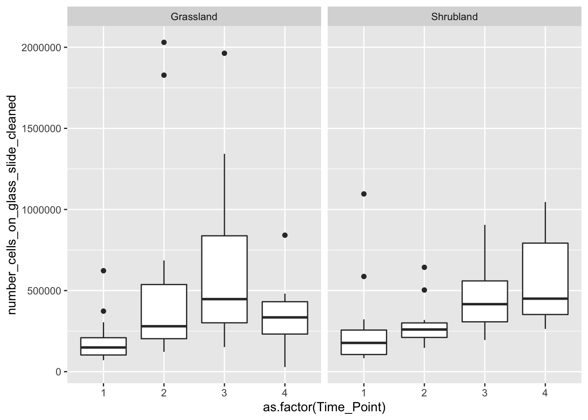
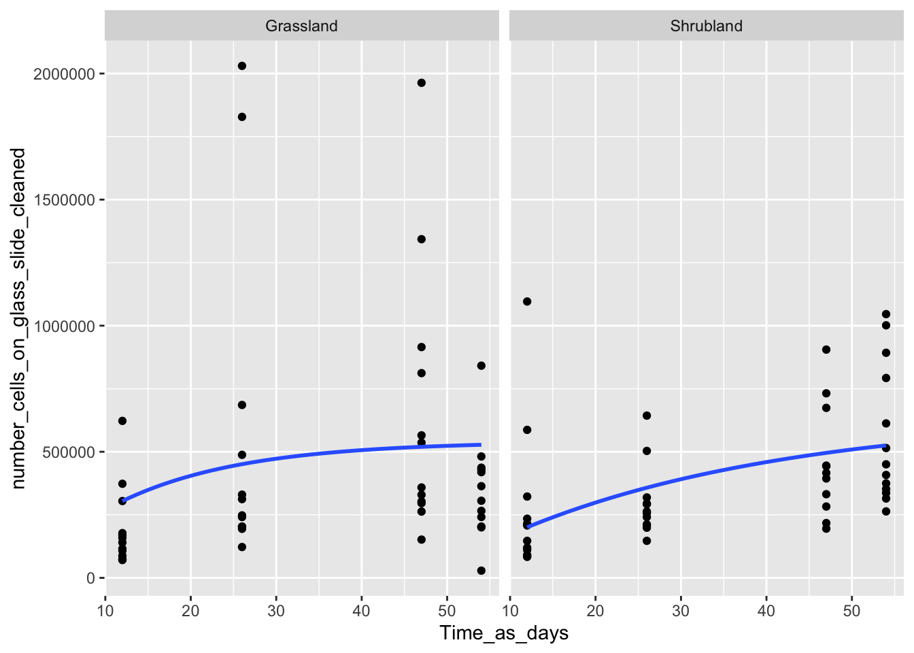
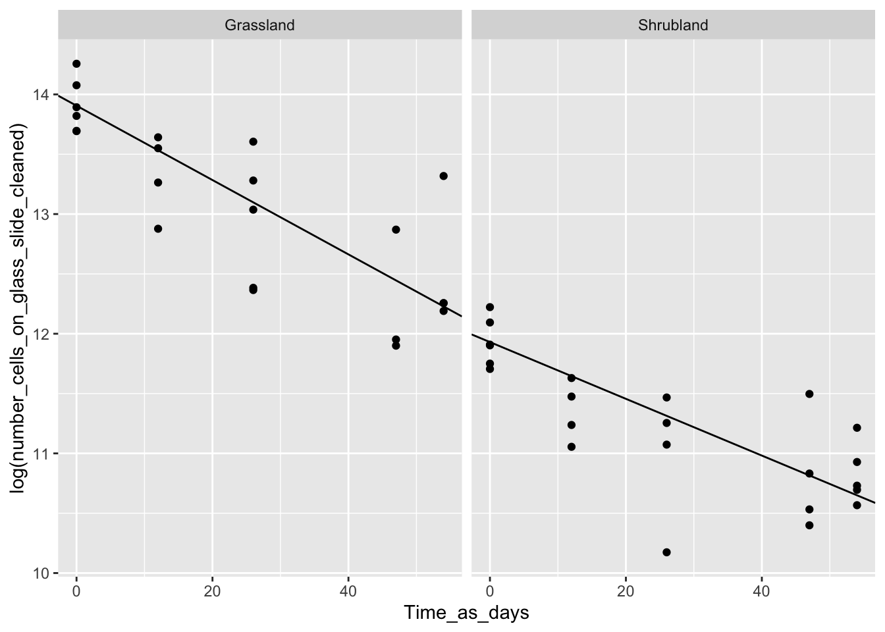
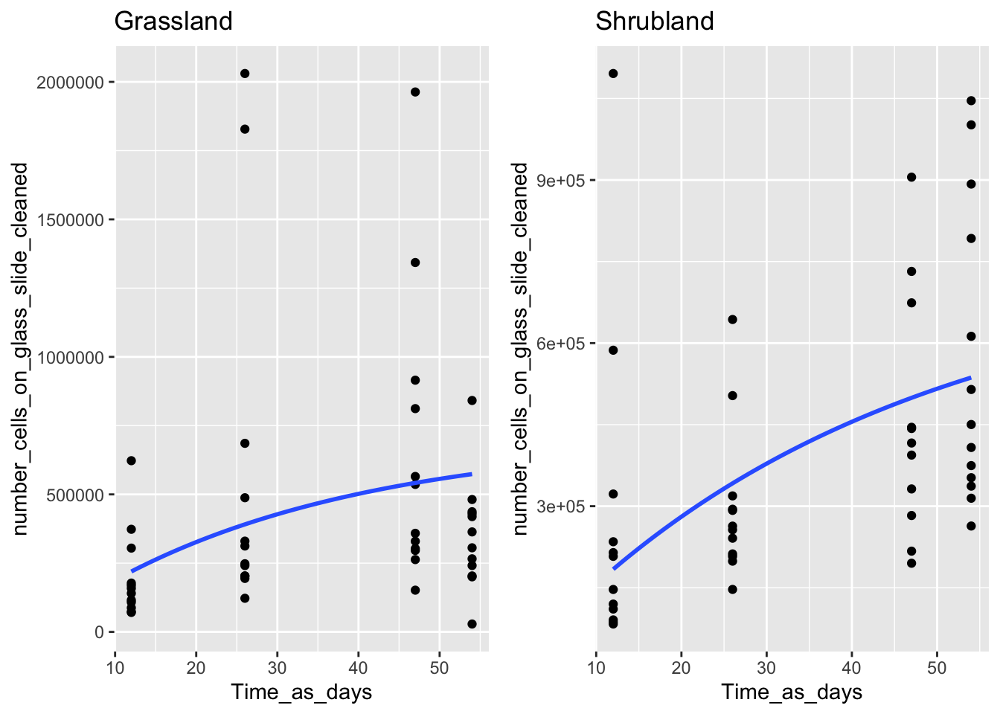

To answer our first overarching question for the landscape dispersal project: Is the rate and composition of microbial dispersal into the soil surface spatially heterogeneous?
Because vegetation appears to be a primary route through which bacteria disperse, we hypothesized that the taxa dispersing and their dispersal rate onto the soil surface will differ between two ecosystems. In fact, we know that bacterial abundance and composition in one grassland and CSS plant litter differs.
library(tidyverse)
library(data.table)
library(knitr)
library(kableExtra)
require(ggplot2)
require(gridExtra)
knitr::opts_chunk$set(comment="", cache=T, warning = F, message = F, fig.path = "../05_output_figures/")First, we’ll look at the abundances on the glass slides over time to see if they are acculumulating or at equilibrium.
# Load the data
flow.data <- load("../03_Processed_data/flow_cytometry_cleaned.rda")
metadata <- load("../03_Processed_data/metadata_cleaned.rda")
# Left join fights me unless both columns are the same data type
metadata.together$`Random_#_Flow` <- as.character(metadata.together$`Random_#_Flow`)
# Set up a key to change time point into # of days
days.key <- c("0" = 0, "1" = 12, "2" = 26, "3" = 47, "4" = 54)
# Clean up our data to just be what we need for this analysis
cell.counts.use <- cleaned.cell.counts %>% left_join(metadata.together) %>% # combine with metadata using Random_#_Flow
mutate(Treatment = ifelse(is.na(Treatment), "Death", Treatment)) %>% # add metadata for T0 samples that weren't included in the overall metadata file
mutate(Time_Point = ifelse(is.na(Time_Point), 0, Time_Point)) %>%
mutate(Ecosystem = ifelse(grepl("^g", `Random_#_Flow`), "Grassland",
ifelse(grepl("^s", `Random_#_Flow`), "Shrubland", Ecosystem))) %>%
select(number_cells_on_glass_slide_cleaned, Treatment, Ecosystem, Time_Point) %>% # reduce to only columns we need
filter(Treatment != "Closed") %>% # remove this negative control (should have been removed prior to this script)
mutate(Time_as_days = days.key[as.character(Time_Point)]) # make column that lists # of days
# Plot this as a boxplot to give a general sense of what the abundance on the glass slides are doing
ggplot(data = cell.counts.use %>% filter(Treatment == "Open")) +
geom_boxplot(aes(x = as.factor(Time_Point), y = number_cells_on_glass_slide_cleaned)) +
facet_wrap(vars(Ecosystem))
Okay, seems like the immigration rate is faster than the death rate for the first three timepoints, and then a plateau is potentially being reached. We can model this increase and plateau using the integral of our population “growth” equation (with just immigration and death).
dn/dt = i - d*n(t) where n = abundance on glass slides, i = immigration rate, and d = death rate
So the integral is (when forced to go through the origin): n(t) = i/d * (1 - e^(-d*t))
# plotting our data with our fancy integral equation going through the origin
ggplot(data = cell.counts.use %>% filter(Treatment == "Open") %>%
mutate(Time_as_days= as.integer(Time_as_days)),
aes(x = Time_as_days, y = number_cells_on_glass_slide_cleaned)) +
geom_point() +
geom_smooth(method = "nls", formula = "y ~ (Im / d) * (1 - exp(-d * x))", se=F,
method.args = list(start=c(Im=2e5, d=0.034))) +
facet_wrap(vars(Ecosystem)) 
# Separate into our two ecosystems
grass.cells <- cell.counts.use %>% filter(Ecosystem == "Grassland")
shrub.cells <- cell.counts.use %>% filter(Ecosystem == "Shrubland")
# Calculating the death rate and immigration rate coefficients
(nls.shrub <- nls(number_cells_on_glass_slide_cleaned ~ Im/d * (1 - exp(-d * Time_as_days)),
data = shrub.cells[shrub.cells$Treatment == "Open", ],
start = list(Im = 2e5, d = 0.034)) %>% summary)
Formula: number_cells_on_glass_slide_cleaned ~ Im/d * (1 - exp(-d * Time_as_days))
Parameters:
Estimate Std. Error t value Pr(>|t|)
Im 2.002e+04 7.059e+03 2.836 0.00676 **
d 3.097e-02 2.036e-02 1.521 0.13499
---
Signif. codes: 0 '***' 0.001 '**' 0.01 '*' 0.05 '.' 0.1 ' ' 1
Residual standard error: 243700 on 46 degrees of freedom
Number of iterations to convergence: 6
Achieved convergence tolerance: 5.734e-06(nls.grass <- nls(number_cells_on_glass_slide_cleaned ~ Im/d * (1 - exp(-d * Time_as_days)),
data = grass.cells[grass.cells$Treatment == "Open", ],
start = list(Im = 2e5, d = 0.034)) %>% summary)
Formula: number_cells_on_glass_slide_cleaned ~ Im/d * (1 - exp(-d * Time_as_days))
Parameters:
Estimate Std. Error t value Pr(>|t|)
Im 3.732e+04 2.354e+04 1.586 0.120
d 6.902e-02 5.500e-02 1.255 0.216
Residual standard error: 453700 on 46 degrees of freedom
Number of iterations to convergence: 17
Achieved convergence tolerance: 8.027e-06# note: use summary(model) to look at standard error, which is HUGE for the death rate and fairly large for the immigration rateBut we don’t actually need to have the model guess what the death rate is because we measured death rate with our death rate glass slides. So let’s plot that data now and calculate our death rate for the grassland and shrubland.
# Calculating death rate for the grassland death slides
intercept.grass <- grass.cells %>%
filter(Treatment == "Death",
Time_as_days == 0) %>%
summarize(mean = mean(log(number_cells_on_glass_slide_cleaned)))
r.grass <- lm(I(log(number_cells_on_glass_slide_cleaned) - intercept.grass[[1]]) ~ Time_as_days + 0,
grass.cells %>% filter(Treatment == "Death")) %>% coef*-1 # THIS IS THE DEATH RATE!! (we do negative because this is actually describing the continuous rate at which cells survive, not the continuous rate at which cells die)
print(paste0("Continuous death rate for grassland cells is ", round(r.grass, 4), "."))[1] "Continuous death rate for grassland cells is 0.0311."# Calculating death rate for the grassland death slides
intercept.shrub <- shrub.cells %>%
filter(Treatment == "Death",
Time_as_days == 0) %>%
summarize(mean = mean(log(number_cells_on_glass_slide_cleaned)))
r.shrub <- lm(I(log(number_cells_on_glass_slide_cleaned) - intercept.shrub[[1]]) ~ Time_as_days + 0,
shrub.cells %>% filter(Treatment == "Death")) %>% coef*-1 # THIS IS THE DEATH RATE!! (we do negative because this is actually describing the continuous rate at which cells survive, not the continuous rate at which cells die)
print(paste0("Continuous death rate for shrubland cells is ", round(r.shrub, 4), "."))[1] "Continuous death rate for shrubland cells is 0.0237."# creating a mini data frame to give our parameters for the linear models (since we are picky about our intercepts here)
lm.parameters.death <- data.frame("Intercept" = c(intercept.grass[[1]], intercept.shrub[[1]]),
"Slope" = c(r.grass[[1]], r.shrub[[1]]),
"Ecosystem" = c("Grassland", "Shrubland"))
# plotting our death rate data
ggplot(data = cell.counts.use %>% filter(Treatment == "Death") %>%
mutate(Time_as_days= as.integer(Time_as_days)),
aes(x = Time_as_days, y = log(number_cells_on_glass_slide_cleaned))) +
geom_point() +
geom_abline(data = lm.parameters.death, aes(intercept = Intercept, slope = -Slope)) +
facet_wrap(vars(Ecosystem))
Sweet! Now we can use these death rates to input into our model so we are only asking it to find the estimate for the immigration rate. Note how much smaller the standard errors are for these immigration rates!
# Calculating the death rate and immigration rate coefficients WITH measured death rates
r.shrubTime_as_days
0.02372169 (nls.shrub <- nls(number_cells_on_glass_slide_cleaned ~
Im/0.02372169 * (1 - exp(-0.02372169 * Time_as_days)),
data = shrub.cells[shrub.cells$Treatment == "Open", ],
start = list(Im = 2e5)) %>% summary)
Formula: number_cells_on_glass_slide_cleaned ~ Im/0.02372169 * (1 - exp(-0.02372169 *
Time_as_days))
Parameters:
Estimate Std. Error t value Pr(>|t|)
Im 17625 1477 11.93 7.89e-16 ***
---
Signif. codes: 0 '***' 0.001 '**' 0.01 '*' 0.05 '.' 0.1 ' ' 1
Residual standard error: 241300 on 47 degrees of freedom
Number of iterations to convergence: 1
Achieved convergence tolerance: 7.677e-08(nls.grass <- nls(number_cells_on_glass_slide_cleaned ~
Im/0.03106574 * (1 - exp(-0.03106574 * Time_as_days)),
data = grass.cells[grass.cells$Treatment == "Open", ],
start = list(Im = 2e5)) %>% summary)
Formula: number_cells_on_glass_slide_cleaned ~ Im/0.03106574 * (1 - exp(-0.03106574 *
Time_as_days))
Parameters:
Estimate Std. Error t value Pr(>|t|)
Im 21918 3170 6.915 1.1e-08 ***
---
Signif. codes: 0 '***' 0.001 '**' 0.01 '*' 0.05 '.' 0.1 ' ' 1
Residual standard error: 454700 on 47 degrees of freedom
Number of iterations to convergence: 1
Achieved convergence tolerance: 2.33e-08# Graph the new curves that we made
A <- ggplot(data = grass.cells %>% filter(Treatment == "Open") %>%
mutate(Time_as_days= as.integer(Time_as_days)),
aes(x = Time_as_days, y = number_cells_on_glass_slide_cleaned)) +
geom_point() +
geom_smooth(method = "nls", formula = "y ~ (Im / 0.03106574) * (1 - exp(-0.03106574 * x))", se=F,
method.args = list(start=c(Im=2e5))) +
ggtitle("Grassland")
B <- ggplot(data = shrub.cells %>% filter(Treatment == "Open") %>%
mutate(Time_as_days= as.integer(Time_as_days)),
aes(x = Time_as_days, y = number_cells_on_glass_slide_cleaned)) +
geom_point() +
geom_smooth(method = "nls", formula = "y ~ (Im / 0.02372169) * (1 - exp(-0.02372169 * x))", se=F,
method.args = list(start=c(Im=2e5))) +
ggtitle("Shrubland")
grid.arrange(A,B, nrow = 1)
#
nhat <- cell.counts.use %>% filter(Treatment == "Open" & Time_Point %in% c("3", "4")) %>%
summarize(median = median(number_cells_on_glass_slide_cleaned))